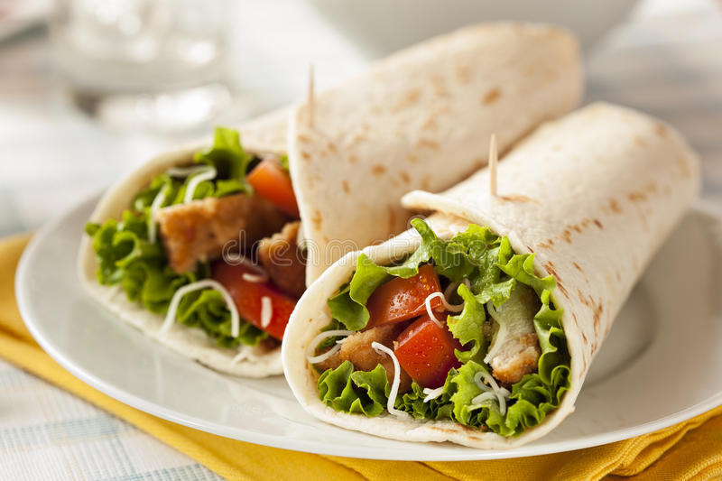

Description
Quick, easy vegetarian wrap! Great for lunches.
Ingredients
- Flour tortilla
- Lettuce
- Tomatoes
- Bell peppers
- Vegetarian chicken substitute
- Sauce of choice
Steps
- Cook your chicken substitute according to package instructions.
- Chop the vegetables
- Warm the tortilla in the microwave for 10 seconds
- Build your wrap, adding sauce to your taste